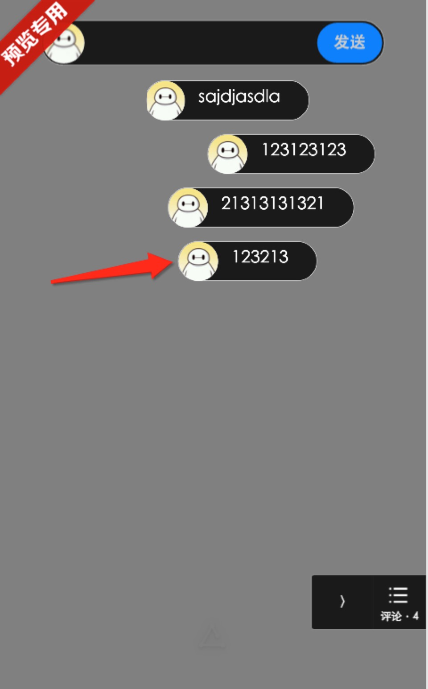
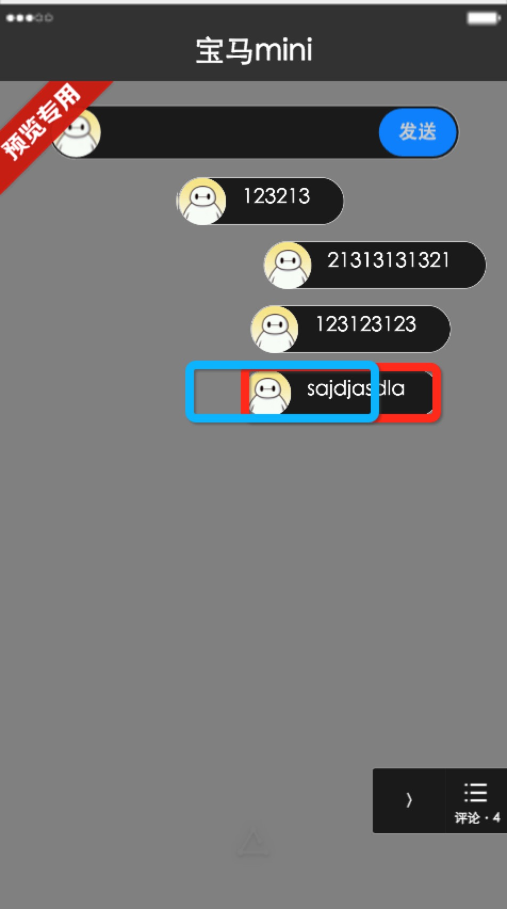
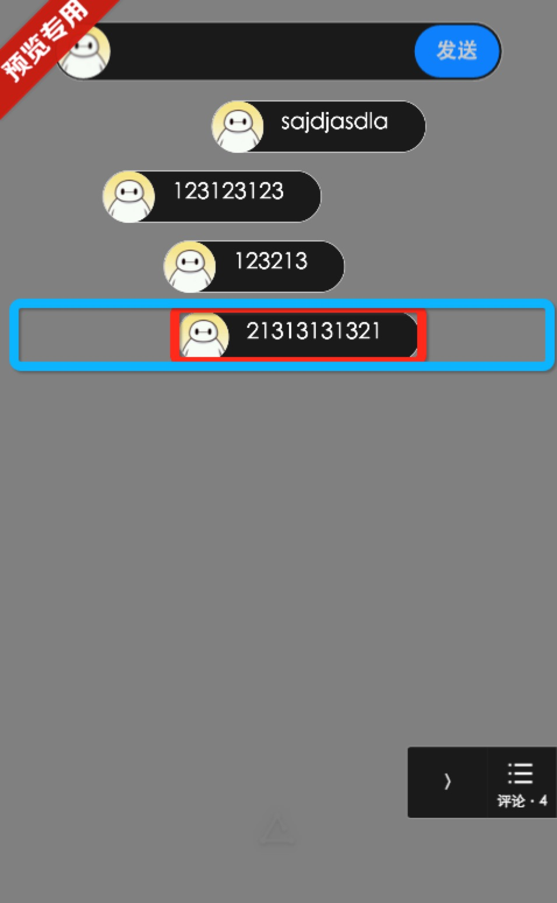

元素animation执行时无法点击
背景：
最近做了两个项目，碰到了同一个需求，就是在一个元素执行animation动画时，要相应点击事件。而在android和iOS两个平台上，表现完全不一样。
现象：
在做弹幕运动的时候，需要点击如下图黑框，结果出现android点击响应正常，而iOS点击时常点不上的问题。而且，元素运动越快，越容易出现点不中的问题。

原因分析：
分析原因，看起来android平台自带浏览器内核，对运动中的元素是每次重绘后都反馈到页面上，再进行下一次重绘，所以每次点击都是点在元素实体上，所以响应迅速及时。而iOS并没有将重绘的结果反馈到页面上而是不断的进行重绘，以保证当前动画的流畅性，这就导致了下图出现的iOS点击区域的问题（蓝色框为实际点击区域，红色框为实际可视区域），从而导致用户使用时感觉老也点不中运动中的元素。元素运动越快，则元素的可点击区域越小，这样就感觉元素越来越难点上了。

解决方案
说实话，找来找去也没有找到很好的解决方案，只有两种方案仅供参考。
1、把animation动画改成translation动画来处理，这样点击问题会稍微得到缓解，只是这又会碰上translateEnd事件在android的坑。
2、变通解决方案，也是我最后采用的方案，扩大iOS端的可点击区域，比如，将上图弹幕中的按钮使用padding放大，扩大按钮的响应点击区域，如下图所示，这种方案可以显著解决点不上的问题，而对于运动速度过快的元素仍然无力。

如果你有更好的解决方案，欢迎联系或者留言指教。